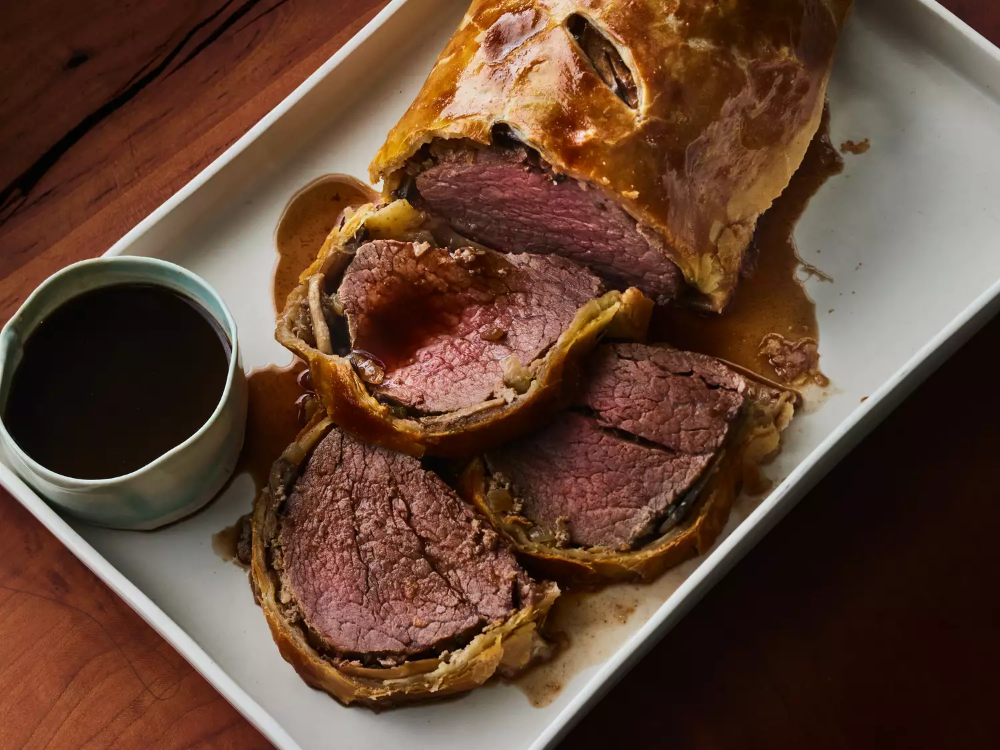

Beef Wellington

Description
Beef Wellington is a dish that consists of a cut of beef that is coated in paté, wrapped in puff pastry, and
baked until the pastry is a beautiful golden brown.
The classic English dish is named after Arthur Wellesley, 1st Duke of Wellington
Ingredients
- 2 ½ pounds beef tenderloin
- 4 tablespoons butter, softened, divided
- 2 tablespoons butter
- 1 onion, chopped
- ½ cup sliced fresh mushrooms
- 2 ounces liver paté
- salt and pepper to taste
- 1 (17.5 ounce) package frozen puff pastry, thawed
- 1 large egg yolk, beaten
- 1 (10.5 ounce) can beef broth
- 2 tablespoons red wine
Steps
- Preheat the oven to 425 degrees F (220 degrees C).
- Place beef tenderloin in a baking dish. Spread 2 tablespoons softened butter over beef.
- Bake in the preheated oven until browned, 10 to 15 minutes. Remove beef from the pan and reserve pan juices;
allow beef to cool completely.
- Increase oven temperature to 450 degrees F (230 degrees C).
- Melt 2 tablespoons butter in a skillet over medium heat. Sauté onion and mushrooms in butter for 5 minutes.
Remove from heat and let cool.
- Mix paté and remaining 2 tablespoons softened butter together in a bowl; season with salt and pepper. Spread
paté mixture over beef. Top with onion and mushroom mixture.